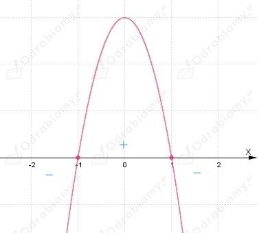
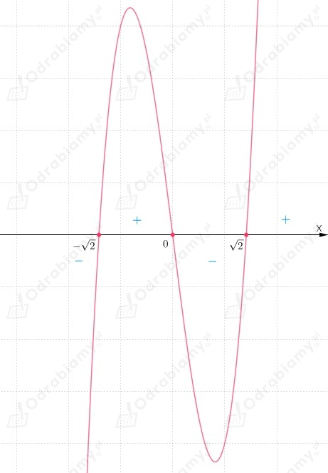

Obliczamy wartość granicy:
Zatem: a=12
Odp: Poprawną odpowiedzią do zadania jest odpowiedź A.
Sprawdzamy, który wzór funkcji należy podstawić do granicy, aby jej wartość była równa -1.
A.
Nie istnieje granica funkcji f w punkcie x0=-1.
B.
C.
Nie istnieje granica funkcji f w punkcie x0=-1.
D.
Odp: Poprawną odpowiedzią do zadania jest odpowiedź B.
Istnienie asymptot pionowych w przypadku funkcji wymiernych badamy w miejscach zerowych mianownika.
A.
zatem:
Wnioskujemy, że liczba -3 nie jest miejscem zerowym mianownika, zatem prosta x=-3 nie jest
asymptotą pionową wykresu funkcji f.
B.
zatem:
Zauważamy, że:
Zatem:
Wobec tego prosta x=-3 nie jest asymptotą pionową wykresu funkcji f.
C.
zatem:
Zauważamy, że:
Wobec tego prosta x=-3 jest asymptotą pionową wykresu funkcji f.
D.
zatem:
Zauważamy, że:
Zatem:
Wobec tego prosta x=-3 nie jest asymptotą pionową wykresu funkcji f.
Odp: Poprawną odpowiedzią do zadania jest odpowiedź C.
Z treści zadania wiemy, że:
Należy zbadać dla jakiej wielkości parametru a funkcja f jest ciągła.
Wobec tego wyznaczamy granice jednostronne funkcji f w punkcie x0=-2:
Wyznaczamy wartość funkcji f dla argumentu -2:
Aby funkcja f była ciągła w punkcie x0=-2, to:
Zatem dostajemy równanie:
Wnioskujemy, że dla a=5 funkcja f jest ciągła w punkcie x0=-2.
Odp: Poprawną odpowiedzią do zadania jest odpowiedź B.
| Liczba f'(x0) jest równa współczynnikowi kierunkowemu stycznej do wykresu funkcji f w punkcie (x0, f(x0)). |
Wyznaczamy pochodną funkcji f:
Obliczamy wartość współczynnika kierunkowego stycznej do wykresu funkcji f:
Odp: Poprawną odpowiedzią do zadania jest odpowiedź D.
Z treści zadania wiemy, że:
Punkt styczności:
Wiemy również, że styczna do wykresu funkcji f tworzy z osią OX kąt 𝛼.
Należy wyznaczyć miarę kąta 𝛽 tak, aby wartość wyrażenia:
była najmniejsza, czyli:
Wyznaczamy pochodna funkcji f:
oraz
Wiemy, że współczynnik kierunkowy prostej stycznej wynosi:
Z tablic wartości funkcji trygonometrycznych możemy odczytać, że:
Wobec tego:
Odp: Poprawną odpowiedzią do zadania jest odpowiedź D.
Z treści zadania wiemy, że:
założenia:
Wyznaczamy pochodną:
Wyznaczamy miejsca zerowe funkcji f':

Zatem uwzględniając założenia:
Zatem wnioskujemy, że funkcja f jest:
Odp: Poprawną odpowiedzią do zadania jest odpowiedź B.
| Wartością najmniejszą (największą) funkcji ciągłej f w przedziale ⟨a, b〉 może być jedna z liczb f(a), f(b) lub jedno z ekstremów lokalnych. |
Zauważamy, że funkcja f jest wielomianem, zatem jest funkcją ciągłą.
Wyznaczamy pochodną funkcji f:
Wyznaczamy miejsca zerowe funkcji f':
Rozwiązujemy równanie:
Szkicujemy pomocniczo wykres funkcji f':

Z wykresu funkcji f' odczytujemy, że:
Korzystamy z warunku dostatecznego istnienia ekstremum.
(Pochodna zmienia znak w punkcie x0=0 z dodatniego na ujemny.)
Wnioskujemy, że funkcja f ma maksimum w punkcie x0=0:
(Pochodna zmienia znak w punkcie x0=√2 z ujemnego na dodatni.)
Wnioskujemy, że funkcja f ma minimum w punkcie x0=√2:
Wyznaczamy wartości funkcji f dla argumentów znajdujących się na końcach przedziału:
Określamy wartość najmniejszą spośród wartości:
Zauważamy, że:
Zatem funkcja f przyjmuje najmniejszą wartość: f(√2)=-7.
Odp: Poprawną odpowiedzią do zadania jest odpowiedź A.
Z treści zadania wiemy, że:
Wobec tego:
Zapisujemy wzór funkcji opisującej podany iloczyn w zależności od zmiennej x:
Należy wyznaczyć największa możliwa wartość funkcji f spełniającej warunki zadania.
Wobec tego wyznaczamy pochodną funkcji f:
Wyznaczamy miejsca zerowe funkcji f':
Rozwiązujemy równanie:
Uwzględniając założenie x>0, zauważamy, że:
Funkcja f osiąga maksimum w punkcie x=4/3.
Wnioskujemy, że funkcja f ma wartość największą dla x=4/3, więc:
Odp: Poprawna odpowiedzią do zadania jest odpowiedź A.